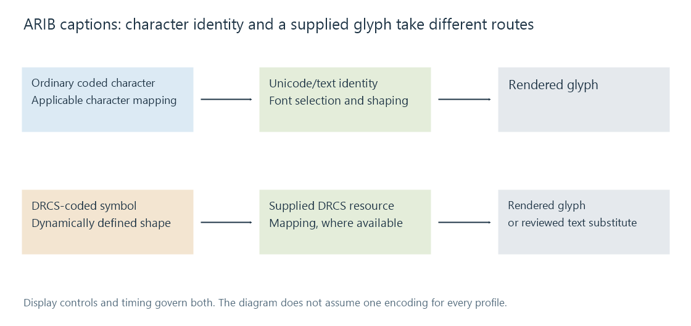

ARIB STD-B24 captions
ARIB STD-B24 captions combine coded characters, display controls and resources such as DRCS glyphs under their applicable broadcast profile.
ARIB STD-B24 defines data coding and transmission functions used in digital broadcasting, including captions. The caption presentation combines coded characters, display controls and the resources needed to draw them.
The applicable profile matters. Japanese character coding, other supported language/profile arrangements and UCS-based interpretations should not be collapsed into one assumption that every payload is ordinary UTF-8 text.
Characters and controls have distinct roles
| Information | Role |
|---|---|
| Character coding and selected character sets | Identify the text or symbol being represented |
| Caption display controls | Establish placement, size, writing direction and presentation changes |
| Additional-symbol mapping | Resolve supported symbols outside a simple basic-character assumption |
| DRCS resource | Supply a dynamically defined character's visual shape |
| Programme timing/service information | Establish when and which caption presentation applies |
A valid coded symbol can need a mapping or resource before it becomes a useful Unicode character or visible glyph. Treating all bytes as printable text discards that structure.
DRCS can carry the shape of a character
DRCS, Dynamically Redefinable Character Sets, lets the presentation use defined glyph resources. A decoder can draw the supplied shape without pretending that the bytes were an already known Unicode letter.

A converter may map a recognized DRCS symbol to an appropriate Unicode alternative when such a mapping is available. Otherwise, a plain-text export needs a deliberate representation or review. Dropping the symbol silently changes the content.
The public libaribcaption implementation documents additional-symbol and DRCS support, font fallback and several rendering backends. That demonstrates a concrete decoder/renderer design; it does not establish which implementation every player uses.
Preserving words and preserving presentation are different
A character export can retain readable text while flattening placement, size, ruby-related layout or other applicable controls. Rendering the original caption model retains another set of properties.
Language/service selection remains necessary too. Finding a caption group does not determine which of its available language information the viewer intended to read.
For an Emby source using ARIB captions, identify the actual recovered representation and the selected route's support. A converted text track and a rendered caption image can both be useful outputs while retaining different aspects of the broadcast presentation.